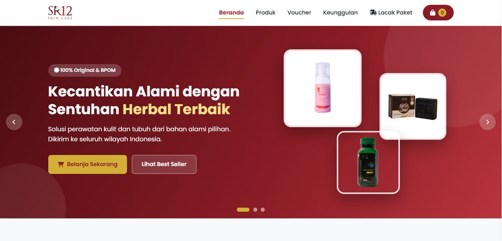

Sedang
belajar: Responsive Web Design
Halo, saya
Zaini Aqil
Freelancer
Saya sedang mempelajari Responsive Web Design melalui freeCodeCamp. Saya berfokus memahami dasar HTML, CSS, dan cara membangun website yang responsif, nyaman digunakan, serta dapat diakses dari berbagai perangkat.
01 / INTRODUCTION
Tentang Saya
Saya sedang mengikuti proses belajar Responsive Web Design melalui freeCodeCamp. Dalam pembelajaran ini, saya berlatih menggunakan HTML dan CSS untuk membuat halaman web yang terstruktur, menarik, dan responsif di berbagai ukuran layar. Saya terus mengerjakan latihan dan project kecil untuk memperkuat pemahaman serta meningkatkan kemampuan Web Development.
02 / WHAT I USE
Keahlian & Tools
Teknologi yang sedang saya pelajari dan gunakan dalam latihan.
Graphic & Design
Learning Focus
03 / SELECTED WORK
Project Pilihan
Beberapa contoh project latihan untuk menunjukkan ide, proses belajar, dan kemampuan yang sedang saya kembangkan.

SR12 Skin Care Store
Web DevelopmentWebsite toko online untuk produk herbal dan perawatan kulit, dengan fitur keranjang belanja, kode voucher, checkout dengan pilihan alamat seluruh Indonesia, serta pemesanan melalui WhatsApp. Dilengkapi halaman admin untuk mengelola pesanan dan voucher, serta pembayaran melalui QRIS dan transfer rekening. Telah dipublikasikan dengan domain sendiri.
Personal Portfolio Website
WebsiteWebsite portofolio untuk memperkenalkan profil, perjalanan belajar, keahlian, dan cara menghubungi saya. Dibuat sebagai latihan pengembangan web.
Dummy project
Catatan: SR12 Skin Care Store adalah website yang sudah online. Project kedua masih berupa contoh konsep/dummy untuk latihan.
04 / GET IN TOUCH
Punya ide project?
Saya terbuka untuk berdiskusi, belajar bersama, maupun berkolaborasi dalam project website dan digital.